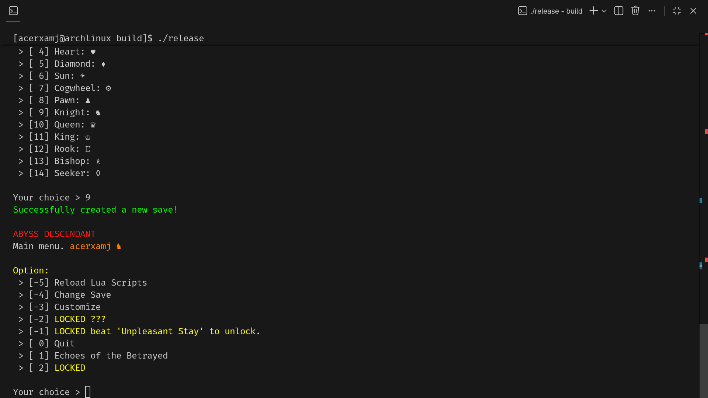
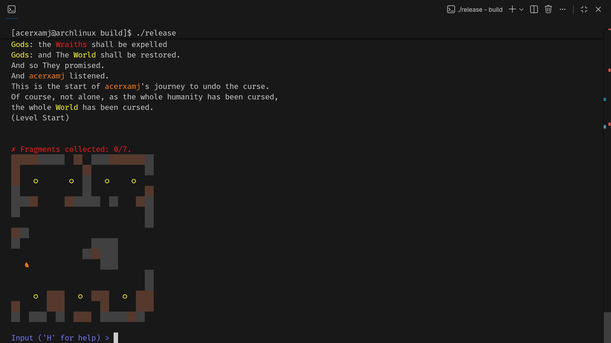
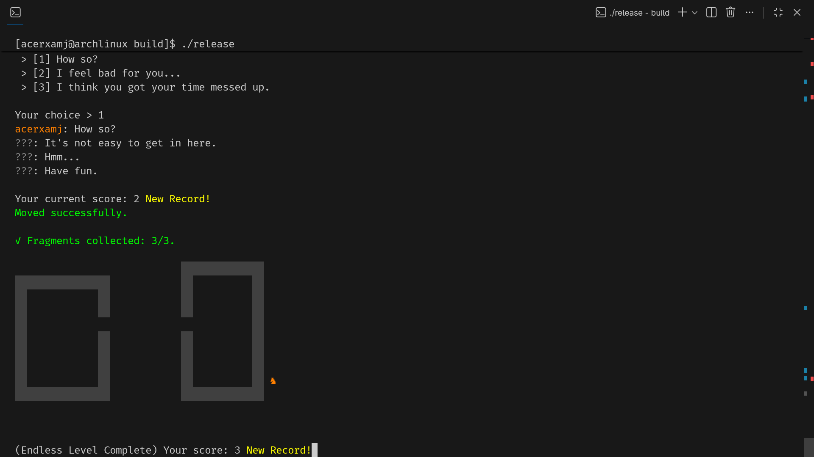
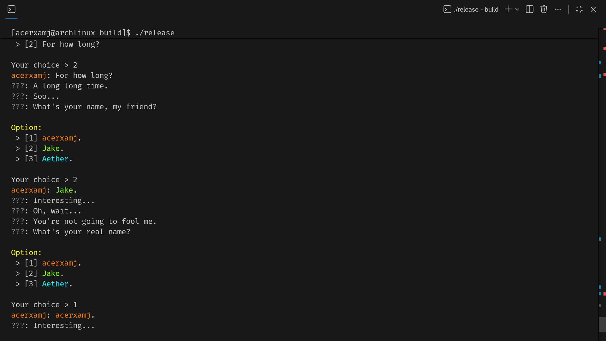
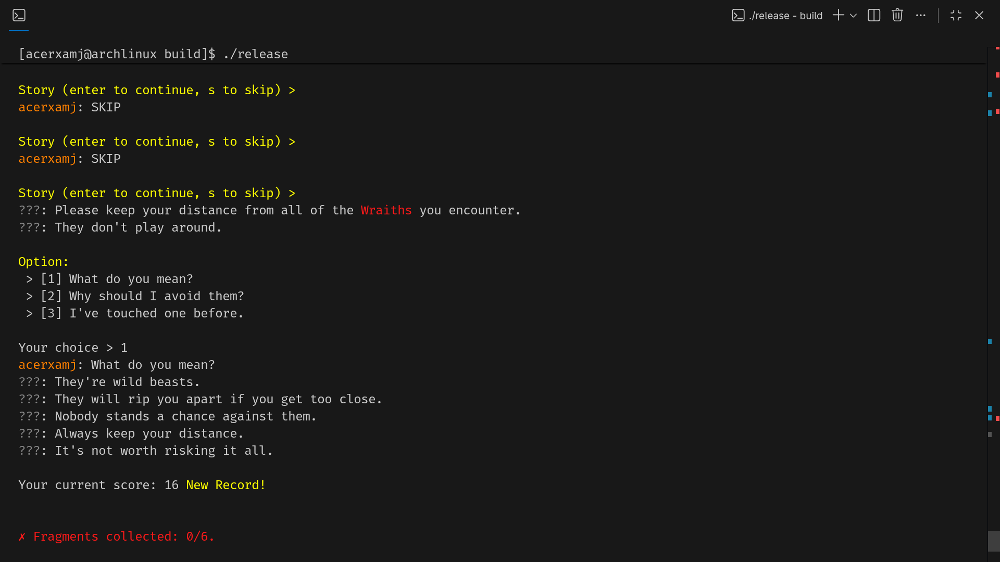
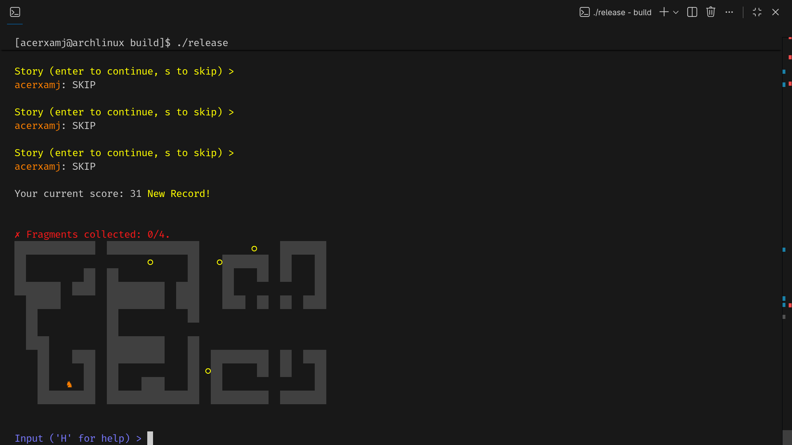
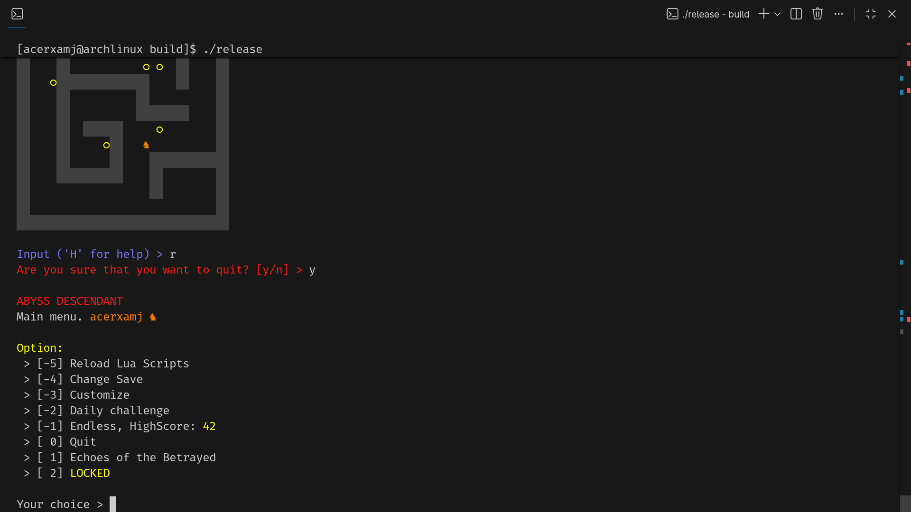
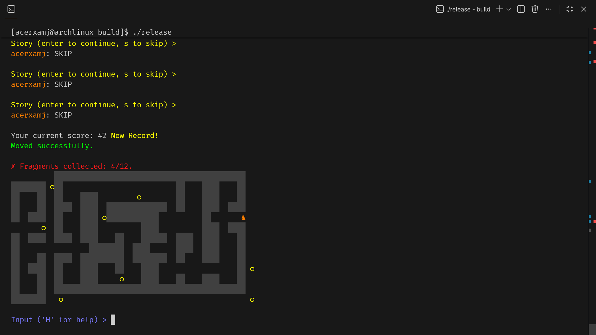
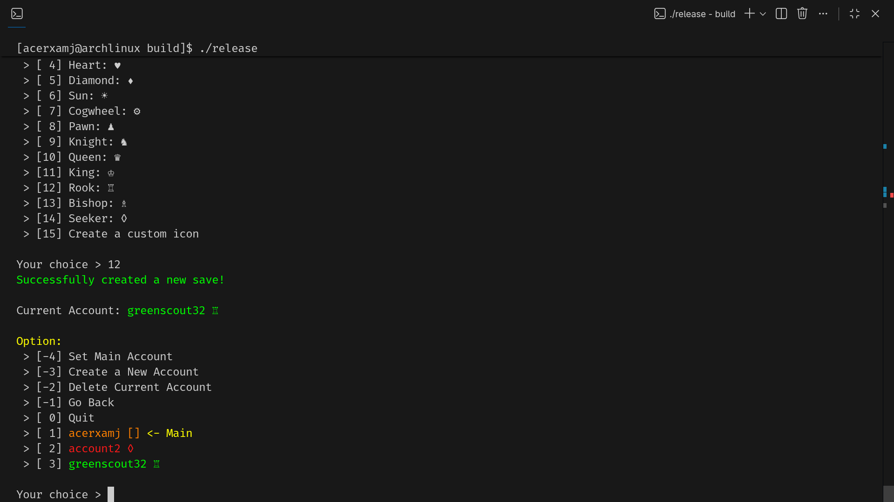
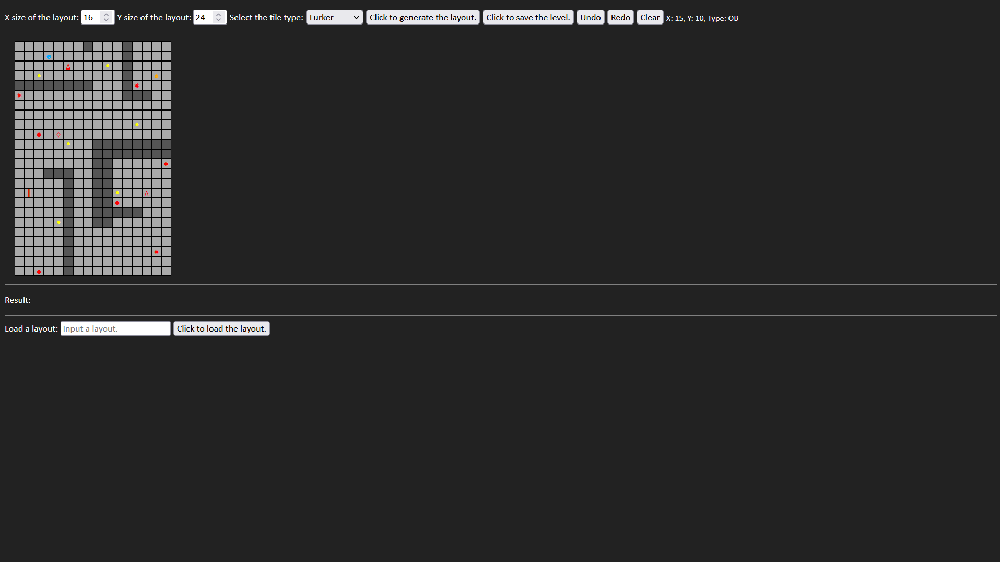

Abyss Descendant
Daniel Vishnevsky
About
Terminal coin-collecting story game about surviving in an apocalypse. My first game made with C++. I used Lua to load the story and levels and SQLite to save the user data. I used SFML to play sounds. Also used HTML/CSS/JS for creating the level editor. Talk about full-stack!
Features
It featured branching dialogue options, different save files and multiple game modes - story mode, endless mode and daily levels. Best part was that everything could be configured with Lua. Fully everything. That's what the "Reload Lua Scripts" button is for.
It had enemies, traps and coins you had to collect. Levels could have different goals that must be accomplished for the level to be beat.
On the side I hacked together a level editor in HTML/CSS/JS. Talk about first project!
Development
This was one of my first projects in C++. I created the simplest game I could and then just kept piling features on top of it until it became whole. I was so excited to learn C++ just because of this project.
What a great project to start your journey. Do note that I lost the story and all levels and that everything in the screenshots is placeholder.
Gallery









